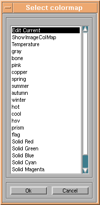
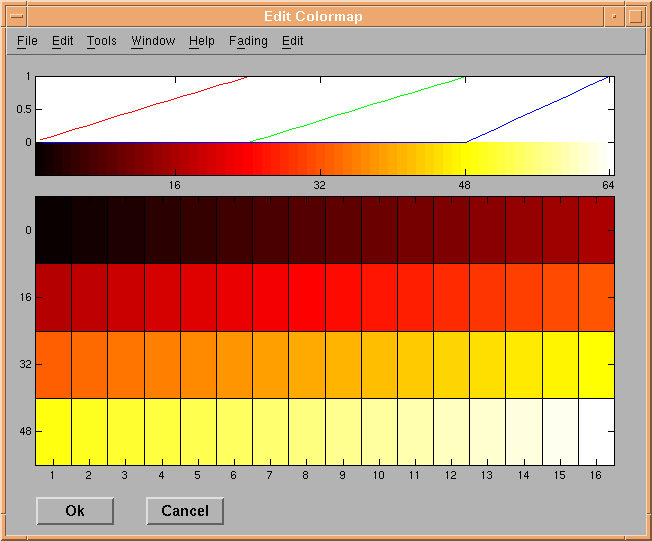

Colormap menu

The colormap menu is a standard tool used by many different NRU imaging tools. The functionality enables the
user to change a colormap, either by selection of a new colormap from the above list, or by editing the current colormap
by using the colormap editor:

A single click on a color field will select that color. By "drag and drop" using the left mouse button, the user is able to change other color
fields to have that color. Using the right mouse button for "drag and drop" between the selected color and another color field will
change the intermediate colors by interpolation between the two colors.
Double clicking a color field will bring up the standard color
selector to change that color.
End of colormap menu info page.